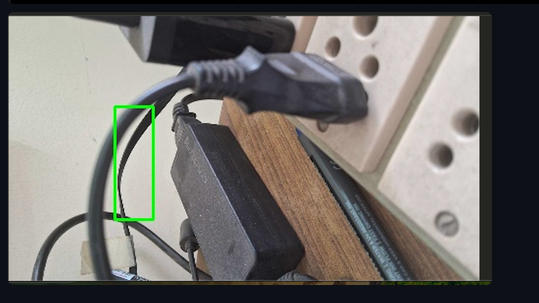

An automated motion-alert pipeline that captures motion events from a smartphone IP camera, routes them through a lightweight Python server running on Ubuntu, exposes the endpoint securely via ngrok, and sends real-time notifications to WhatsApp using Twilio.

IP Webcam turns your smartphone into a network camera with multiple viewing options. It includes built-in video streaming, motion detection, and sensor logging accessible via HTTP.
http://<PHONE_IP_ADDRESS>:8080.git clone https://github.com/your-username/ip-webcam-whatsapp-alerts.git
cd ip-webcam-whatsapp-alerts
pip install twilioExport your Twilio credentials as environment variables on your Ubuntu server:
export TWILIO_ACCOUNT_SID="your_account_sid_here"
export TWILIO_AUTH_TOKEN="your_auth_token_here"
export TO_WHATSAPP_NUMBER="whatsapp:+1234567890" # Your phone number with country codeserver.py)Uses Python's built-in http.server standard library (No Flask needed):
import os
import json
from http.server import HTTPServer, BaseHTTPRequestHandler
from twilio.rest import Client
ACCOUNT_SID = os.getenv("TWILIO_ACCOUNT_SID")
AUTH_TOKEN = os.getenv("TWILIO_AUTH_TOKEN")
TO_NUMBER = os.getenv("TO_WHATSAPP_NUMBER")
FROM_NUMBER = "whatsapp:+14155238886"
twilio_client = Client(ACCOUNT_SID, AUTH_TOKEN)
class MotionWebhookHandler(BaseHTTPRequestHandler):
def _send_response(self, status_code, message):
self.send_response(status_code)
self.send_header("Content-Type", "application/json")
self.end_headers()
self.wfile.write(json.dumps({"status": message}).encode("utf-8"))
def do_POST(self):
print("🚨 Motion detected by camera stream!")
try:
message = twilio_client.messages.create(
from_=FROM_NUMBER,
body="🚨 ALERT: Motion detected on your IP Webcam stream!",
to=TO_NUMBER
)
print(f"✅ WhatsApp alert dispatched! Message SID: {message.sid}")
self._send_response(200, "Alert sent successfully")
except Exception as e:
print(f"❌ Failed to dispatch message: {e}")
self._send_response(500, str(e))
def do_GET(self):
self.do_POST()
def run_server(port=5000):
server_address = ('', port)
httpd = HTTPServer(server_address, MotionWebhookHandler)
print(f"🚀 Server listening on port {port} (No Flask)...")
httpd.serve_forever()
if __name__ == '__main__':
run_server()Run the server:
python3 server.pyngrok http 5000Event → Plugin → IP Webcam → Motion detected.Net → HTTP Request (Method: POST, URL: https://<your-ngrok-id>.ngrok-free.app).import time
import requests
IP_CAMERA_URL = "http://:8080/sensors.json"
LOCAL_WEBHOOK = "http://localhost:5000"
def poll_sensors():
while True:
try:
res = requests.get(IP_CAMERA_URL, timeout=3).json()
motion_value = res.get('motion', {}).get('data', [[0, [0]]])[-1][1][0]
if motion_value > 0:
print("Motion detected via IP Webcam sensor polling!")
requests.post(LOCAL_WEBHOOK)
time.sleep(15)
except Exception:
pass
time.sleep(1)
if __name__ == '__main__':
poll_sensors() Trigger a test alert manually from your terminal:
curl -X POST https://<your-ngrok-id>.ngrok-free.app